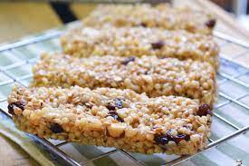

Barra de Cereal Caseira

Descrição
Cansado de barras de cereais industrializados com gosto de lascas de lápis?
Ingredientes
- 45 gramas castanha do Pará
- 45 gramas amêndoas
- 45 gramas castanha de caju
- 45 gramas de nozes
- 2 xícara aveia em flocos
- 1 cs de linhaça dourada
- 1 cs de gergelim
- 1 cx de canela em pó
- 2 bananas pratas amassadas
- 1/4 xícara de pasta de amendoim
- 1/3 xícara melado ou mel
Modo de Preparo
- Untar forma com óleo de girassol
- 15 minutos no forno pré aquecido a 180 °C
Home